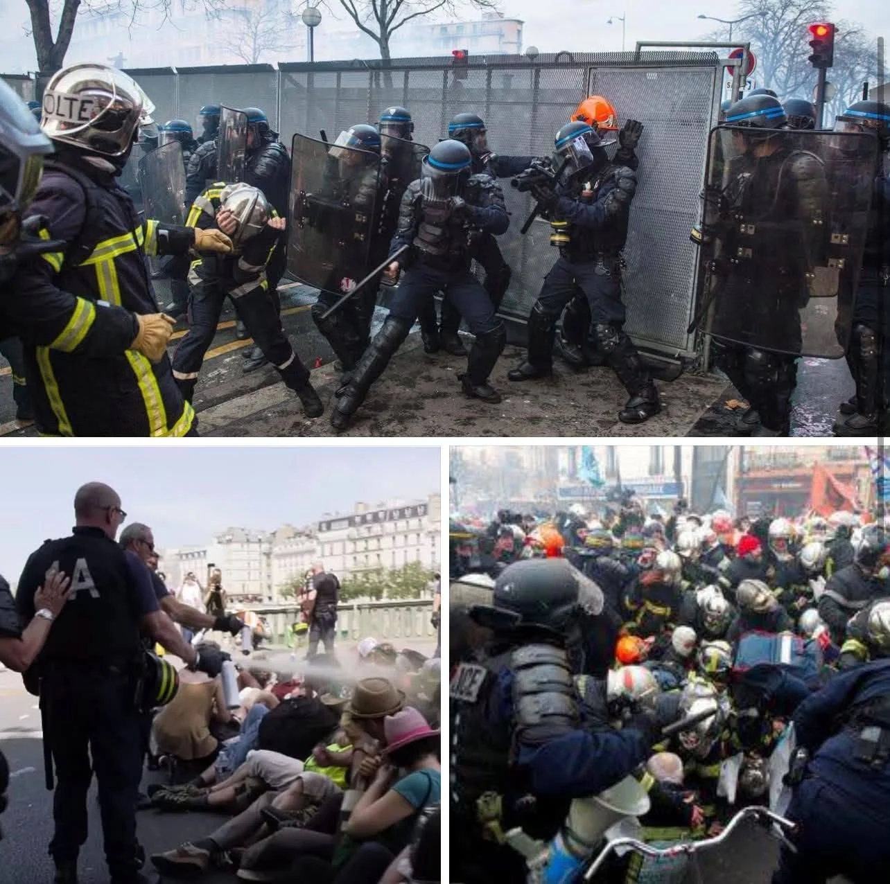

Publication relayée par le PCF 79
Patrick Le Hyaric interpelle le gouvernement sur les moyens des pompiers
Date de mise à jour indiquée par Facebook · 29 juillet 2026
Repères éditoriaux
Patrick Le Hyaric interpelle le gouvernement sur les moyens des pompiers. Il rappelle que ceux qui sont aujourd’hui remerciés ont fait face aux CRS quand ils réclamaient davantage de moyens.
Texte de la publication · Patrick Le Hyaric
« Que valent les remerciements d’aujourd’hui quand hier le même pouvoir déployait les CRS contre les pompiers réclamant plus de moyens? »

Sources
Patrick Le Hyaric · publication relayée par le PCF 79 · bibliothèque Facebook · AR-0002-FB-00723
À lire aussi · Incendies en Gironde. Fabien Gay demande des moyens de lutte contre les feux